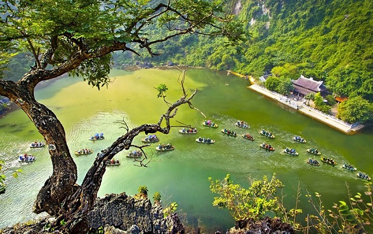
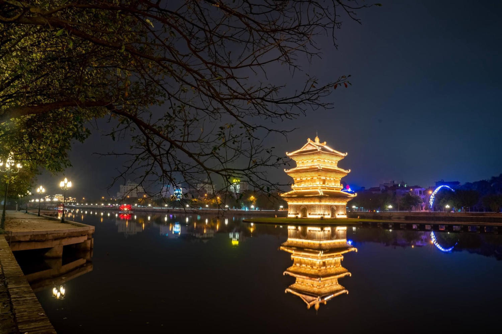

Tràng An
Khu du lịch sinh thái Tràng An là một phần của Quần thể danh thắng Tràng An nổi tiếng và cũng là một địa điểm tham quan Ninh Bình đẹp nhất. Khu du lịch sinh thái Tràng An tập hợp những yếu tố nổi bật nhất với các hang động kỳ bí, những thung lũng xanh mướt và những dòng sông quanh co ôm lấy chân núi trùng trùng điệp điệp. Có thể nói, Khu du lịch sinh thái Tràng An bao gồm những điểm độc đáo nhất, góp phần lớn nhất trong việc tạo nên danh hiệu Di sản văn hóa và thiên nhiên Thế giới cho tỉnh Ninh Bình.

Khi xuôi dòng sông xanh ngắt khám phá Tràng An, bạn sẽ được chiêm ngưỡng những ruộng lúa tươi xanh cùng hàng loạt di tích cổ kính, tựa như một vùng đất bị lãng quên bởi thời gian. Những địa điểm du lịch Tràng An nổi tiếng nhất có thể kể đến như sau:
Đền Trình
Ngôi đền khang trang gắn liền với bốn vị Khai quốc công thần của triều đình nhà Đinh trong cuộc dẹp loạn 12 sứ quân, lập ra trang sử vàng của nước Đại Cồ Việt thời bấy giờ. Với thế "Tựa sơn, hướng thủy", Đền Trình như một chứng nhân lịch sử của mảnh đất Tràng An qua bao biến đổi của lịch sử trong hơn một ngàn năm về trước. Ngày nay, đến với Đền Trình, du khách sẽ được chiêm ngưỡng kiến trúc tuyệt mỹ, hòa quyện cùng thiên nhiên sông nước tươi đẹp.
Hang Địa Linh
Hang Địa Linh có chiều dài lên đến gần 300m và là một trong những hang động thạch nhũ đẹp nhất Việt Nam. Nơi đây từng được ưu ái gọi với cái tên Hang Châu Báu, sở dĩ vì vẻ đẹp lấp lánh của những thạch nhũ trong hang tựa như một kho vàng ngọc mà con người vẫn mong mỏi tìm kiếm. Đây là một trong những địa điểm check in Ninh Bình được nhiều du khách yêu thích vì có thể đi thuyền trên dòng sông xanh ngắt và khám phá hang động bí ẩn
Hang Tối
Đúng với cái tên của mình, Hang Tối quanh năm không đón ánh sáng mặt trời và mang vẻ bí ẩn mời gọi du khách đến khám phá. Nhờ có hệ thống đèn chiếu sáng hiện đại thì nay bạn đã có thể dễ dàng chiêm ngưỡng những kiến tạo đá độc đáo trong hang. Lòng Hang Tối có độ rộng hẹp thay đổi bất ngờ, vì vậy chỉ khi ngồi trên thuyền của nhưng người dân bản địa, bạn mới có thể khám phá trọn vẹn hang động mà không lo lạc lối.
Thung Tối
Đi hết Hang Tối, bạn sẽ bắt gặp vùng Thung Tối là vùng nước nơi giao nhau giữa bốn cửa hang: Hang Seo, Hang Ba Giọt, Hang Sáng, Hang Tối. Quang cảnh bốn bề nước non và đồi núi khiến nhiều du khách đã ưu ái ví von rằng đứng tại Thung Tối tựa như chiêm ngưỡng bốn mùa xuân, hạ, thu, đông và bốn phương tứ hướng tại cùng một thời điểm. Đây được coi là nơi chiêm ngưỡng trọn vẹn vẻ đẹp của đất trời và hội tụ đủ nét đẹp của cả đất nước.
Hang Sáng
Hang Sáng với chiều dài lên đến 112m và cửa hang rộng, thuận thiện cho thuyền bè chở khách tham quan và chiêm ngưỡng những kỳ quan tự nhiên ẩn giấu bên trong. Vào đến Hang Sáng, bạn sẽ được nhìn thấy những thạch nhũ từ trên trần động buông xuống như những tấm rèm khổng lồ đẹp đến kinh ngạc. Mỗi khối thạch nhũ trong hang động còn được người xưa đặt những tên gọi đậm chất dân gian, gắn liền với những câu chuyện và cổ tích huyền bí.
Hang Nấu Rượu
Sở dĩ có tên gọi như vậy vì Hang Nấu Rượu được cho là nơi xưa kia dùng để lấy nước nấu rượu tiến vua. Các nhà khảo cổ học đã tìm thấy rất nhiều bình, vại và các dụng cụ để nấu rượu trong khu vực hang này. Với độ dài gần 250m, ngày nay bạn có thể khám phá Hang Nấu Rượu và chiêm ngưỡng những bình vại cổ mà được ban quản lý khu du lịch trưng bày trong hang.
Đền Trần
Là một di tích lịch sử nổi bật tại Tràng An, Đền Trần gắn liền với lịch sử của hai triều đại Đinh và Trần. Đền được xây dựng từ thời nhà Đinh và mang tên Đền Nội Lâm do nằm giữa rừng cây quanh năm tươi tốt. Vào thời Trần thì đền được tu sửa lại làm nơi thờ tự những người thân thích với Vua Trần Thái Tông. Tham quan Đền Trần bạn sẽ được chiêm ngưỡng kiến trúc độc đáo và đừng quên cầu nguyện bình an vì đây là ngôi đền nổi tiếng linh thiêng tại đất Ninh Bình.
Hang Sính, Hang Si, Hang Ba Giọt
Ba hang động này nổi tiếng với truyền thuyết về mối tình sầu bi của một chàng trai và công nương thời xa xưa. Người xưa cho rằng chính vì chuyện tình buồn này mà các thạch nhũ tại ba hang động này không kho ráo mà nhỏ nước quanh năm để khóc thương cho tình yêu của họ. Tương truyền rằng khi tham quan Hang Ba Giọt mà hứng được đủ ba giọt nước thì mọi ước muốn về tình duyên và cuộc sống của bạn sẽ trở thành sự thật.
Phủ Khống
Phủ Khống được xây dựng theo kiến trúc đền, chùa truyền thống tại Việt Nam nhưng là một địa điểm du lịch Ninh Bình không thể bỏ qua vì câu chuyện đằng sau nó. Phủ là nơi thờ tự bảy vị công thần triều Đinh với những bí ẩn chôn giấu vị trí lăng mộ Vua Đinh Tiên Hoàng cho tới tận ngày nay. Đây cũng là nơi ngắm cảnh tuyệt đẹp mà mọi du khách đều yêu thích khi tham quan Khu du lịch sinh thái Tràng An.
Tuyệt Tịnh Cốc
Với khung cảnh hoang sơ trữ tình như các bộ phim kiếm hiệp mà chúng ta hay xem, Động An Tiêm được các bạn trẻ ưu ái đặt cho một cái tên mỹ miều “Tuyệt tình cốc”. Tạm gác lại những xô bồ của cuộc sống, hãy đến với khung cảnh thiên nhiên thơ mộng, thanh bình nơi đây, tách biệt hẳn với thế giới bên ngoài. Đến với Động Am Tiêm thì bạn đừng bỏ qua check-in tại cổng thành cổ - nơi từng là lối vào duy nhất cho khu vực biệt lập này. Thành cổ được xây dựng từ đá dù quy mô không quá lớn nhưng đứng vững qua bao thăng trầm thời gian. Đây là địa điểm du lịch Ninh Bình yêu thích của nhiều bạn trẻ và cả những cặp đôi đến chụp ảnh cưới.
Hang Múa
Bạn là người thích sự chinh phục nhưng những địa điểm bên trên quá hiền hòa và thơ mộng? Vậy thì hãy thử thách bản thân với Hang Múa - được mệnh danh là “Vạn Lý Trường Thành của Việt Nam" với 486 bậc thang khiến bạn chắc chắn phải thở dốc khi leo nhưng rồi cũng khiến bạn phải trầm trồ khi đến nơi bởi vẻ đẹp của Ninh Bình hiện ra trước mắt quá tuyệt mỹ. Từ đỉnh hang nhìn xuống chính là đường vào Tam Cốc - Bích Động vàng óng mùa lúa chín và xanh mướt độ cuối năm, hòa vào bức tranh thiên nhiên tuyệt đẹp đó chính là núi non trùng điệp. Tất cả tạo nên một khung cảnh thơ mộng khó cưỡng lại. Những năm gần đây thì Hang Múa cũng là địa điểm "sống ảo" yêu thích của nhiều bạn trẻ nhờ những bức ảnh cực "chất" từ du khách trong và ngoài nước check-in mỗi dịp đi Ninh Bình.
Phố Cổ Hoa Lư
Phố cổ Hoa Lư Ninh Bình được phân thành 2 khu vực: Khu vực giới thiệu sản phẩm và khu ẩm thực. Do đó, bên cạnh trưng bày rất nhiều các sản phẩm thủ công mỹ nghệ truyền thống của các làng nghề trên địa bàn tỉnh và các tỉnh lân cận, đây còn là nơi du khách có thể thưởng thức các món ăn ngon đặc sản đến từ mọi miền đất nước như: bánh đa, bánh nếp, bánh mật, bánh khoái tép… được bày biện bắt mắt trong các gian hàng truyền thống tái hiện đời sống văn hóa xã hội thời xưa.
Cố Đô Hoa Lư
hắc đến du lịch văn hóa, tâm linh thì hãy cùng nhau khám phá vùng đất Hoa Lư. Cố đô Hoa Lư là một quần thể di tích quốc gia đặc biệt quan trọng của Việt Nam bao gồm: Đền Vua Đinh và Đền Vua Lê và nhiều công trình lịch sử khác. Nếu bạn yêu thích lịch sử, muốn khám phá và hiểu thêm về lịch sử nước nhà cũng như tham gia vào các lễ hội cầu may thì chắc chắn bạn không thể bỏ qua vùng đất Hoa Lư lịch sử Đến với cố đô, bạn sẽ như lạc bước vào những năm tháng xưa cũ khi chiêm ngưỡng các công trình kiến trúc được xây từ lâu đời nhưng vẫn sừng sững với thời gian cho đến tận ngày hôm nay. Bên cạnh hai công trình nổi bật là Đền Vua Đinh và Đền Vua Lê thì Cố đô Hoa Lư cũng sở hữu những ngôi chùa cổ kính đặc biệt: Chùa Ngân Xuyên, Chùa Nhất Trụ. Tham quan và chụp ảnh tại những địa điểm này sẽ chẳng khác nào những thước phim cổ trang giữa nhịp sống hiện đại.
Thung Nham
Vườn chim Thung Nham
Một trong những địa điểm du lịch Ninh Bình nổi tiếng là Vườn Chim Thung Nham, nơi sinh sống của khoảng 40 loài chim với số lượng lên đến 50 ngàn con. Mỗi khi hoàng hôn buông xuống là lúc vườn chim đẹp nhất với hình ảnh từng đàn cò bay lượn, kín cả một vùng nước, thật sự đó chính là một vẻ đẹp nguyên sơ mà khó có thể tìm thấy ở những nơi khác.
Động Tiên Cá
Là một trong những động xuyên thủy đẹp nhất Ninh Bình, Động Tiên Cá cũng hấp dẫn du khách với những khối thạch nhũ cổ đại và câu chuyện về nàng tiên cá hóa đá. Khác với những hang động khác tại Tràng An, khi tham quan Động Tiên Cá bạn sẽ không ngồi thuyền mà đi bộ trên cây cầu nổi dài gần 700m để xuyên động và khám phá những thạch nhũ kỳ ảo.
Động Vái Giời
Động Vái Giời được cho là nơi lập đàn cúng trời đất của các bậc tiền bối từ thời xa xưa, mang đậm màu sắc tâm linh với ba tầng: trần gian, địa ngục và thiên đường.Với mỗi tầng trong động sẽ có những khối thạch nhũ gắn liền với tên gọi và câu chuyện mang tính nhân sinh của dân tộc Việt. Đây chắc chắn là một địa điểm du lịch đẹp ở Ninh Bình thú vị khi thiên nhiên liên hệ mật thiết tới văn hóa và tín ngưỡng dân gian.
Miệt Vườn
Có thể nói, Miệt vườn là một trong những địa điểm đi Ninh Bình độc nhất vô nhị trong Khu du lịch sinh thái Thung Nham và khu vực Đồng bằng Bắc Bộ. Miệt vườn là vườn trái cây lớn thường chỉ thấy khi du lịch các tỉnh Tây Nam Bộ. Đến với khu Miệt vườn Thung Nham, bạn sẽ được thỏa sức hái trái cây và ăn thử miễn phí hàng loạt loại trái cây ngon ngọt ngay tại vườn.
Cây Đa Di Chuyển
Cây đa di chuyển là một cây cổ thụ hơn một ngàn năm tuổi nằm trong khu vực Thung Nham. Di chuyển ở đây là chỉ sức sống phi thường của cây đa, mỗi khi có một rễ mục ruỗng, cây lại mọc thêm một rễ chính bám đất thay thế để duy trì nhựa sống. Theo các nhà khoa học, đến nay cây đa di chuyển đã thay rễ đến lần thứ ba, mỗi 300 năm thì gốc cây lại chuyển sang một vị trí khác nhưng vẫn bao bọc quanh ngôi đền thờ trung thần của vua Đinh Tiên Hoàng tài ba.
Vườn Quốc Gia Cúc Phương

Một địa điểm tham quan mới ở Ninh Bình mà nhiều du khách yêu thích, đặc biệt là các bạn trẻ ưa khám phá hay yên thiên nhiên chính là Vườn quốc gia Cúc Phương. Vườn quốc gia đặc biệt nằm trên địa phận 3 tỉnh: Ninh Bình, Thanh Hóa, Hòa Bình. Phần lớn diện tích vườn thuộc tỉnh Ninh Bình, lên đến hơn 22.000 ha với đa dạng chủng loại hệ sinh thái, nơi đây lưu giữ cảnh đẹp thiên nhiên hoang sơ cùng với bản sắc văn hóa dân tộc Mường.